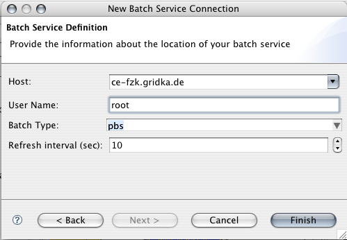
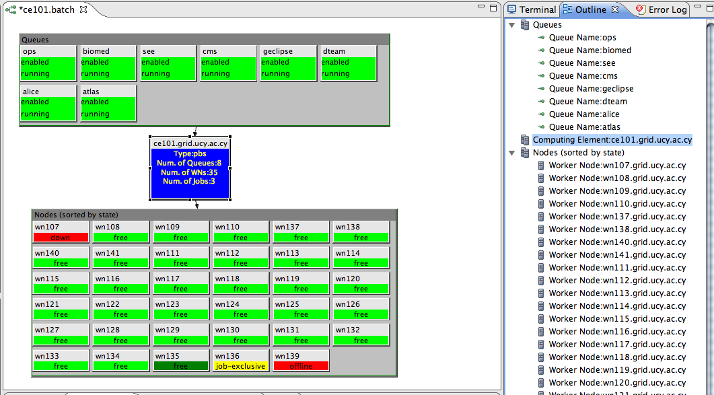
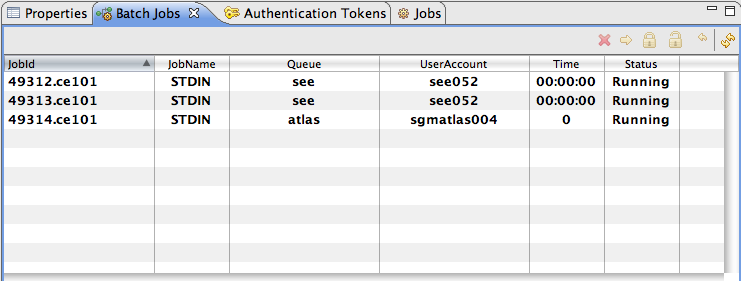
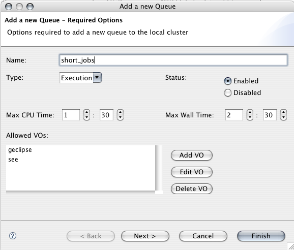

How to implement support for a new Batch Service?
The new Batch Service Wizard creates new SSH tunnel into batch service
The Batch Editor displays the current state of a batch service and provides for interaction with the service
The Batch Job View displays all the batch jobs residing in the selected resource in the Batch Editor
The new Queue Wizard helps to specify a new queue in the batch service
eu.geclipse.batch.IBatchWrappereu.geclipse.batch.ui.editors.BatchEditor